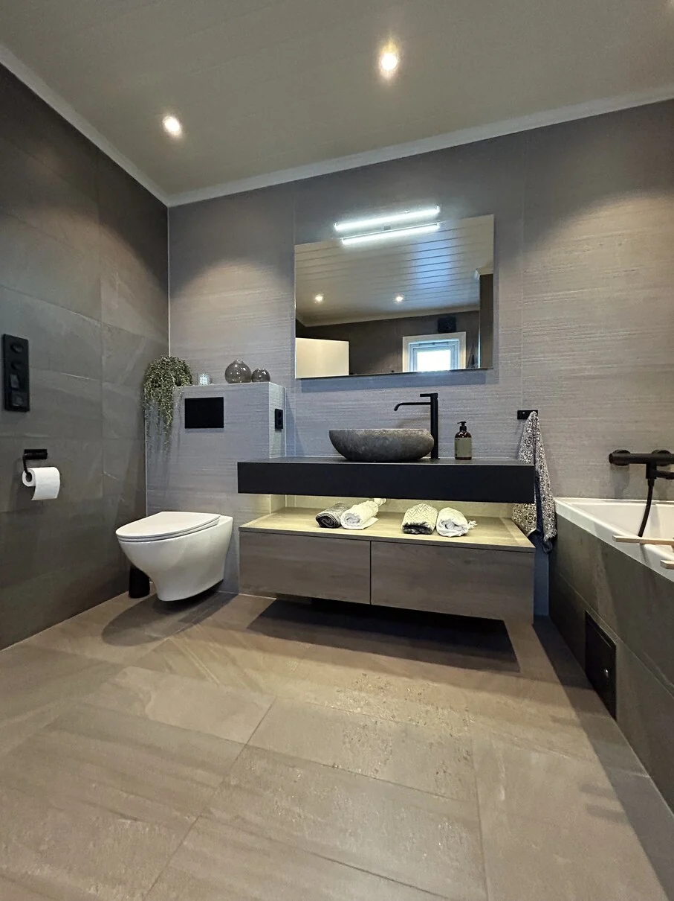

Murmester · Vestskogen
Vi leverer håndverk av høy kvalitet.
Bad og våtrom, fliser og skifer, og mur – utført av murmester med erfaring. Vi søker også flere flinke og hyggelige murere og flisleggere.
Bad og våtromFliser og skiferMur
01 — Tjenester
Hva kan vi tilby
Vi tar oppdrag i Vestskogen og omegn.
02 — Slik jobber vi
Riktig utførelse, først og fremst
På våtrom er det arbeidet som ikke vises som avgjør. Vi gjør underlag, membran og fall riktig – og dokumenterer det vi leverer.
- Underlag – kontrollert og forberedt.
- Membran – tett, riktig utført.
- Flis – jevnt, med rene fuger.
03 — Prosessen
Fire steg
Vi avklarer før vi starter.
- Befaring
Vi ser på forholdene og hører ønskene.
- Tilbud
Omfang og pris, skriftlig.
- Arbeid
Riving, oppbygging og flislegging.
- Overlevering
Gjennomgang og dokumentasjon.
«Vi leverer håndverk av høy kvalitet.»
Skal badet eller flisene fornyes?
Ta kontakt for en befaring – vi sier hva jobben krever, og hva den koster.